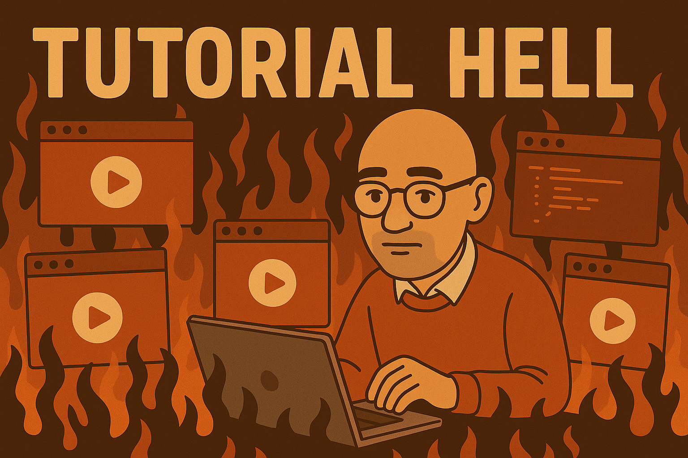

Tips for programming and project management
Take them at face value…
Programming can be tricky, particularly for beginners who may not be aware of best practices and strategies for writing code. It is important to learn and develop good practices early, as it will help significantly when actually working with your data.
Here are some of my tips for programming and data analysis, not that I’m an expert by any means, but this follows my own experience and the recommendations of others.
1. Organise your projects appropriately
For projects, particularly larger ones, organising your project folder appropriately is important. It makes it a lot easier to find files and to keep track of what you are doing. There’s no single recommended way, but you can follow existing templates such as the cookiecutter initiative, which automatically creates a specific folder structure. Cookiecutter may be a bit overkill, particularly if you are new to programming, but you can always simplify its template.
For example, you may choose to have a folder structure like this where core features of your project i.e, data, scripts and results, are nicely organised into distinct folders and sub-folders.
my_project/
├── data/
│ ├── raw/
│ └── processed/
├── scripts/
│ ├── R/
│ └── Rmd
├── output/
│ ├── figures/
│ └── txt/
├── docs/
├── .gitignore
├── README.md
└── my_project.Rproj2. Discretize using Markdown chunks instead of writing continuous scripts
Organisation is also important within the scripts that you write. Markdown is a great way to do this, which you can also use to create interactive documents - like this course!
Within each script, you can separate your analyses into discrete chunks, which will run independently, instead of having one long script. This makes it easier to understand what exactly is being done at each step, both for yourself and for others who may not know your code. It also means that you can run each chunk independently, which is useful if you are working with a long pipeline and want to run a specific analysis without having to run the entire script.
For example, you can have a script like this:
Chunk 1 - Load packages
...
Chunk 2 - Process data
...
Chunk 3 - Analysis 1
...
Chunk 4 - Analysis 2If you have to make changes to a specific analysis, you can do so easily without having to change other analyses, as they naturally follow each other.
4. Leverage large language models but wisely
Programming has significantly changes since the advent of large language models (LLMs), which can provide increasingly sophisticated code in response to user-generated prompts. However, using LLMs for this purpose is often a double-edged sword. Whilst you may be more productive, you may also be less likely to understand what the code is doing. In addition, LLMs may not be as appropriate for certain tasks, e.g., for advising scientific analyses and hypotheses.
LLMs are best suited to perform low-level tasks that don’t require human-based or scientific reasoning. A great example would be for plot-generation, which doesn’t require much thought, but does require a lot of code, particularly for more complex plots. For example, you can ask ChatGPT to generate a plot using ggplot2 in R, and it will generate the code for you in no time!
Prompting ChatGPT to generate a plot using ggplot2
Understanding the best practices for programming using LLMs is a whole separate topic in of itself, but ultimately, it is important to remember that LLMs are just that - language models. One framework for working with LLMs is presented below, where the first stage is to understand the task and whether it is suitable for the model. The second stage is to discern the model output, and whether it is appropriate for your aim. The third stage is to calibrate the output appropriately based on how well the code performs, and finally, you can iteratively refine the output by submitting follow-up prompts1.
A framework for using LLMs in scientific work (Sohail & Lin, 2025)
5. Tutorials are fine, but get stuck in
Ultimately, the best way to learn programming is through experience, ideally by working on your own project. This way you will get experience with all stages of the data analysis pipeline, including data preprocessing, analysis and visualisation. Whilst tutorials are useful, they don’t reflect the process of working with data and the problems that may arise. There’s a reason why the phrase “tutorial hell” exists! 2

Use tutorials to get a basic understanding of a programming language or software, and determine whether that may be something that you could use. But then actually learn by working on your own projects.